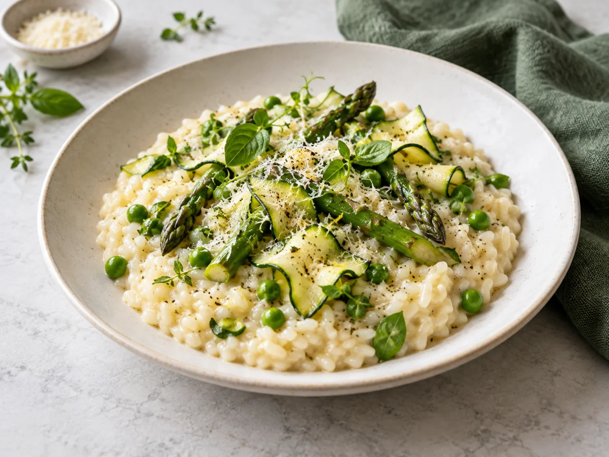
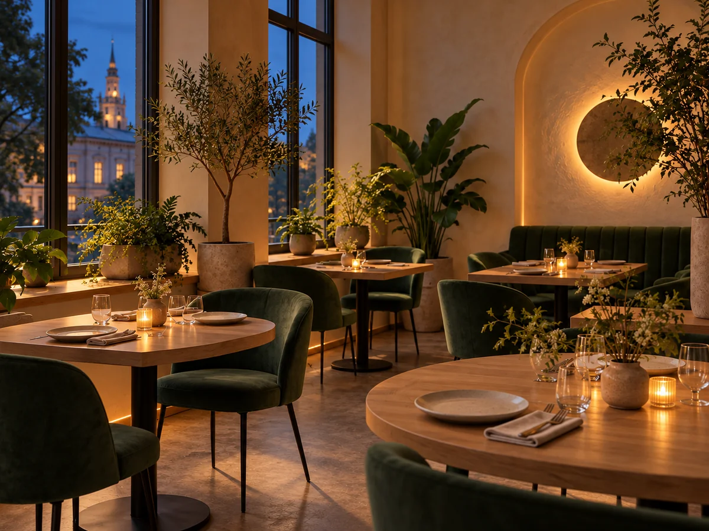
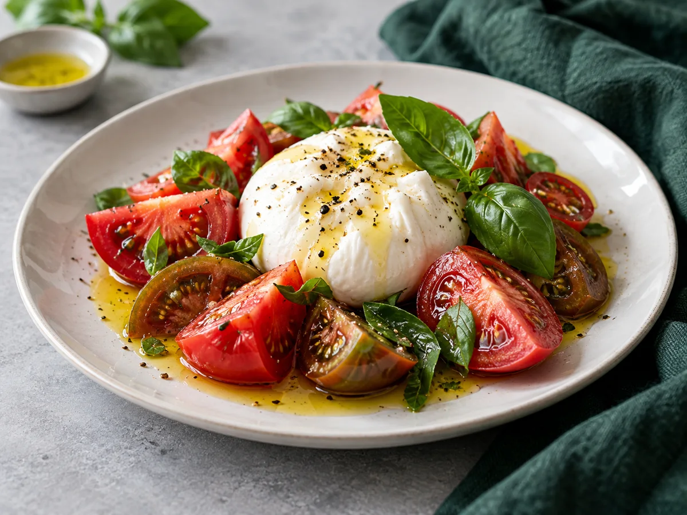
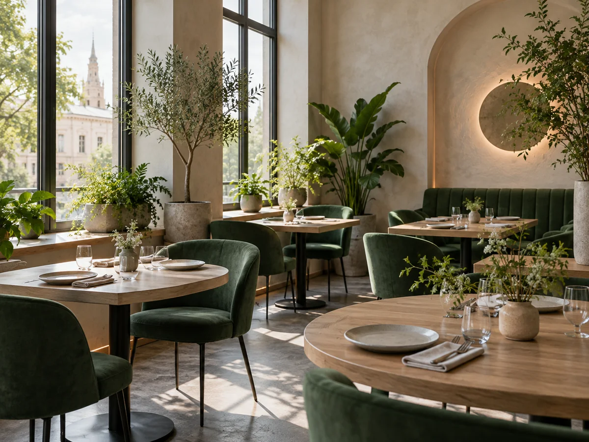

Закуски
Хрустящие овощи, нежная буррата и тёплый хлеб.
Начните с лёгкогоМосква · Кузнецкий Мост, 7
Сезонные блюда, светлый зал и долгие разговоры. Всё, что нужно для вашего хорошего вечера.

Вкус сезона
Ризотто с зелёным горошком, сливочная буррата и тёплые десерты. Выберите своё настроение.
Вечер для своих
Соберите друзей, выберите удобное время — мы позаботимся о вашем столе.

Выбирайте настроение. Мы позаботимся о вкусе.
Хрустящие овощи, нежная буррата и тёплый хлеб.
Начните с лёгкогоРизотто, рыба и блюда из печи с сезонными гарнирами.
Останьтесь на ужинДомашние десерты, ягоды и чашка хорошего кофе.
Завершите сладкимВ центре внимания
Нежная текстура. Свежая зелень. Тёплый вечер.
790 ₽

Лёгкое началоСливочный сыр, сочные томаты и базилик.
690 ₽
Наш подход
Мы собираем меню вокруг знакомых продуктов и готовим так, чтобы каждый ингредиент звучал ясно. Здесь можно встретиться за неспешным обедом или остаться на долгий ужин.
Три простых шага, чтобы спланировать визит.
Посмотрите часы работы и определитесь с датой.
Укажите число человек и пожелания к столу.
Бронь действительна только после подтверждения рестораном.

Можно никуда не спешить
Встреча после долгого дня, обед с близкими или маленький праздник без повода. Мы создаём пространство, в котором хорошо быть собой.
Выберите стол у окна или тихий уголок для разговора — просто расскажите о своих пожеланиях.
Спланировать вечер